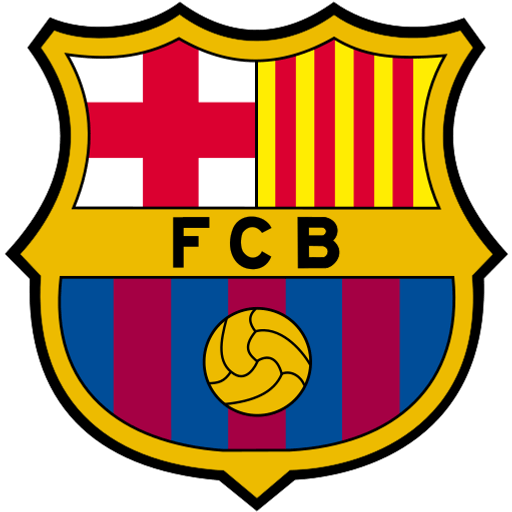
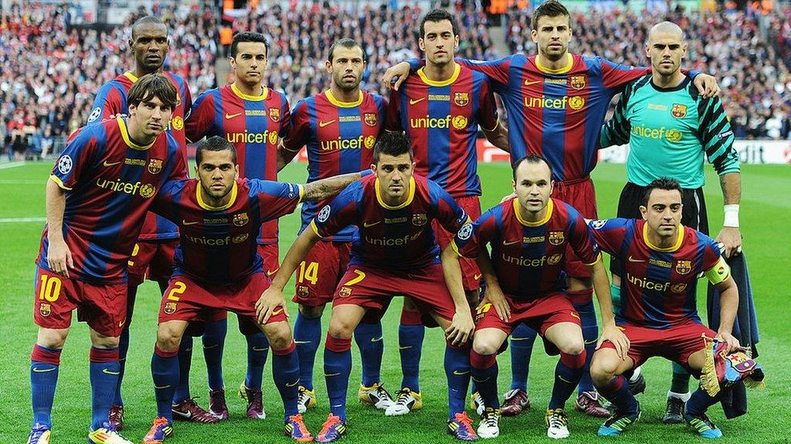

Min hobby
Vad jag gillar att göra på fritiden är att titta på fotboll, när man hejar på ett lag och håller koll på deras matcher och allt som händer med klubben så tar det upp en del av sin tid.
Så ändå om det är lite oorginelt så skulle jag säga att det är min hobby. Jag som många andra ärvde klubben jag hejar på genom att det var det lag min pappa höll på.
Barcelona är det laget jag håller på och på min fritid gillar jag att hålla koll på om något nytt hänt med klubben och såklart titta på deras matcher.
De har en väldigt bra trupp detta året så det är en bra tid och vara en barcelona supporter
Favorit Trupp
Enligt mig så är 2010-2011 truppen den bästa, kan vara för att det var då jag började förstå fotboll lite mer.
Jag vet att det är nog nostalgin som påverkar min åsikt lite, men det var ett väldigt bra år för oss då vi vann tre titlar.
Vilket då var Champions League, La Liga och Spanska Supercupen, lite tråkigt att vi inte vann Copa Del Rey finalen vilket skulle gett oss trippeln


| Motståndare | Resultat | Datum | Turnering |
|---|---|---|---|
| Elche | 0-5 W | Sön 23/8 | La Liga |
| Bilbao | 2-0 W | Tors 27/8 | La Liga |
| Rayo | 5-2 W | Mån 31/8 | La Liga |
| Valencia | 0-5 W | Sön 6/9 | La Liga |
Barcelonas schema